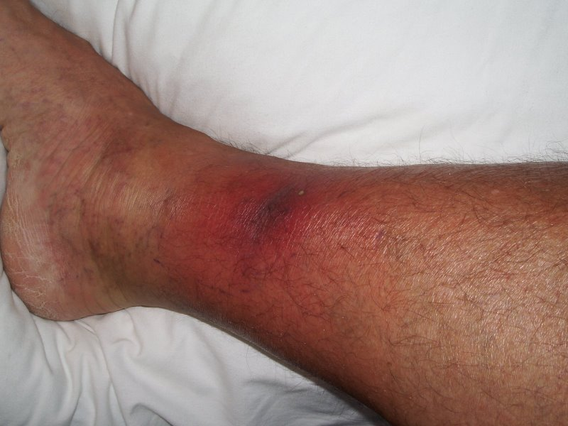

Staphylococcus Aureus
Did you know that...
The most common cause of staph infections. It is a spherical bacterium, frequently part of the skin flora found in the nose and on skin. About 20% of the population are long-term carriers of ''S. aureus''. ''S. aureus'' can cause a range of illnesses from minor skin infections, such as pimples, impetigo (may also be caused by ''Streptococcus pyogenes''), boils (furuncles), cellulitis folliculitis, carbuncles, scalded skin syndrome and abscesses, to life-threatening diseases such as pneumonia, meningitis, osteomyelitis, endocarditis, toxic shock syndrome (TSS), bacteremia and septicemia.
Bacterial cells of the bacteria (Staphylococcus aureus) which is one of the causal agents of mastitis in dairy cows. Its large capsule protects the organism from attack by the cow’s immunological defenses.d infections. Abbreviated to ''S. aureus'' or ''Staph aureus'' in medical literature, ''S. aureus'' should not be confused with the similarly named and similarly dangerous (and also medically relevant) species of the genus ''Streptococcus''.

Additional Information
Photages
Disease in Humans
Its incidence is from skin, soft tissue, respiratory, bone, joint, endovascular to wound infections. It is still one of the five most common causes of nosocomial infections, often causing postsurgical wound infections. Abbreviated to ''S. aureus'' or ''Staph aureus'' in medical literature, ''S. aureus'' should not be confused with the similarly named and similarly dangerous (and also medically relevant) species of the genus ''Streptococcus''.

Staphylococcus Aureus
Back